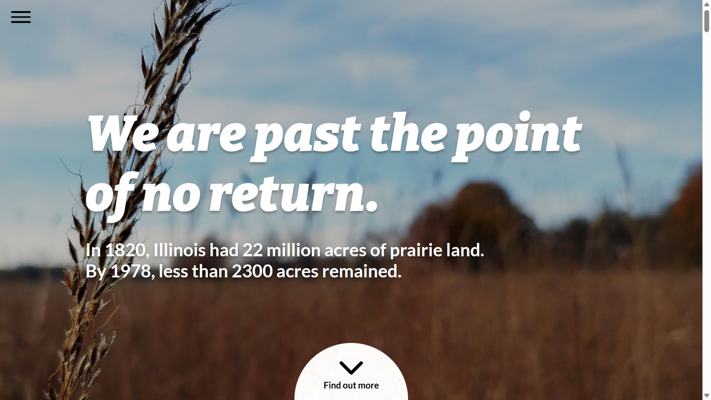

Back to Projects

Native Plants Illinois is a website I made as my final project for UIUC's Fall 2022 ENG 177: Introduction to Sustainability course. One of the prompts was to create a piece of media to educate a target audience on a certain environmental issue, and given my involvement with the Registered Student Organization Red Bison, I decided to pick advocacy for native plant species as my topic. The website was made from scratch in about less than a week, and is hosted using GitHub Pages.